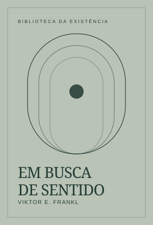

Em Busca de Sentido
Viktor Frankl, psiquiatra austríaco e sobrevivente dos campos de concentração nazistas, investiga como alguém pode encontrar sentido mesmo quando perde liberdade, segurança e vínculos. Seu testemunho percorre o choque da chegada, a luta cotidiana pela sobrevivência, o embotamento emocional e os desafios psicológicos da libertação.
A partir dessa experiência, apresenta a logoterapia, uma abordagem centrada no sentido e na responsabilidade concreta. O estudo explica a importância do amor, da realização de tarefas e da postura possível diante do inevitável, sem romantizar o sofrimento nem atribuir às vítimas a responsabilidade pela violência que sofreram.